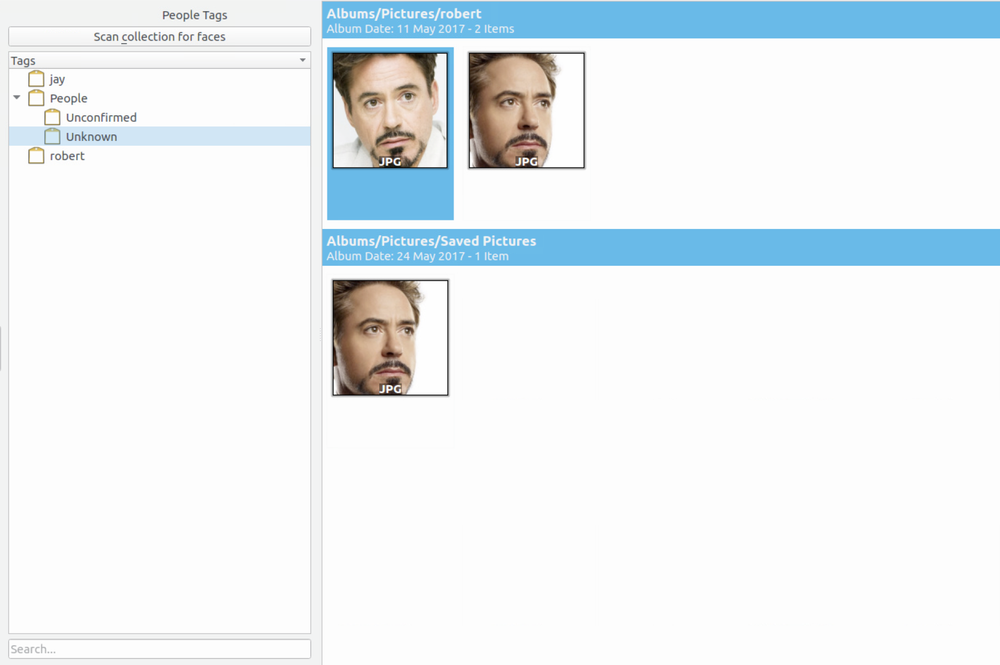

Eigenfaces algorithm is a well-known face recognition algorithm was developed by Sirovich and Kirby (1987) and used by Matthew Turk and Alex Pentland in face classification[1]. Eigenfaces is based on a mathmatical process called principal component analysis(PCA). It uses a set of training data which are human face images and labels. Eigenvectors is solved by PCA for the face matrix, and we will get a sub-space in which the distance of different people's face images is as large as possible. Each image in testing set is projected to the sub-space, and the training image with neareast distance will be its identity.
In my work I have to add Eigenfaces module in digiKam for face recognition enhencement. In the first week, I read the code in digiKam for face recognition. I wrote a demo project to test the efficiency of Eigenfaces in OpenCV. I use orl face database which include 40 people's face images with 10 images of each person. I use 8 images of each person as traing images, and another 2 as test images, and the result is 76 true positive, 4 false positive which is acceptable.
Modification Details
My work including 4 parts:
(1) UI modification. User can choose which algorithm to use when he wants to recognize faces, so I added algorithm option in advanced tab, which is shown in the screenshot below:
(2) Algorithm Selection. The program has to use the specified algorithm which is chosen by user which including:
(a) Create a new Eigenfaces model.(3) Database modification. I created a new table "OpenCVEigenMat" in face database to store the mat of each labeled face. Program will insert a new mat when a new face is labeled, and it will select all mat from the table when training the model.
(b) Read training data from face database.
(c) Add new labeld face as trainging data.
(d) Traing by calculate eigenvectors.
(e) Recognizing a new face.
(4) Eigenfaces algorithm. This is core part of my work. In this part, I created the Eigenfaces model, including training, recognizing, and reading/saving data from database. A threshold can be set by experience which is used to decide a face is unknown or not.
Code details
I have commited my code in a new branch. You can read and test my work there.
I used a small face data set to test, the next several screenshots are faces before recognition and after recognition.
Before recognition:
After recognition(3 left unknown):

Images in tag "Jay" after recognition:
Images in tag "Robert" after recognition:
Reference
[1] Turk, Matthew A and Pentland, Alex P. Face recognition using eigenfaces. Computer Vision and Pattern Recognition, 1991. Proceedings {CVPR'91.}, {IEEE} Computer Society Conference on 1991